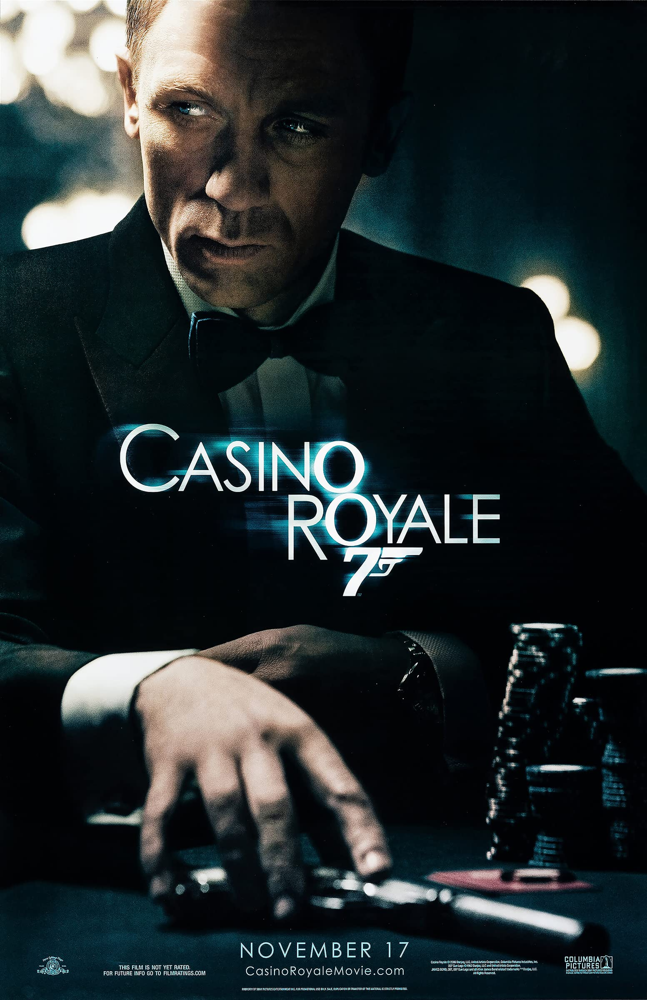

Why These Movies Stand Out to Me
My favorite movies are all different, but each one stands out for a reason. Some are visually unforgettable, some have incredible soundtracks, and some are just endlessly entertaining. Together, they represent the kinds of stories I enjoy most: emotional, stylish, rewatchable, and memorable.
Favorite Movies by Category
-
Movies I admire for emotion and atmosphere
- Interstellar
- La La Land
-
Movies I enjoy for entertainment and energy
- Cars
- Casino Royale
- Catch Me If You Can

Interstellar
Interstellar is one of my favorite movies because of its scale, emotion, and ambition. The visuals are incredible, the soundtrack is unforgettable, and the story feels both personal and massive at the same time.

La La Land
I love La La Land because it has style, color, great music, and a unique emotional tone. It feels classic and modern at the same time, and it is one of the most visually memorable movies I have seen.

Cars
Cars is one of my favorite comfort movies. It is fun, quotable, and nostalgic, and it has always been one of those movies that is easy to rewatch.

Casino Royale
Casino Royale is one of my favorite action movies because it feels sharp, intense, and grounded. It balances action, suspense, and style really well.
Catch Me If You Can
Catch Me If You Can is one of my favorites because it is clever, fast-moving, and very entertaining. It has a unique charm that makes it stand out every time I watch it.
Featured Trailer
Interactive Tableau Visualizations
Pixar Films Interactive Dashboard
Pixar Films Dashboard
Why I Keep Coming Back to These Movies
The movies I come back to most are the ones that create a strong feeling, whether that is excitement, nostalgia, tension, inspiration, or emotion. Even though these favorites come from different genres, they all feel distinctive and worth revisiting.
Back to Top